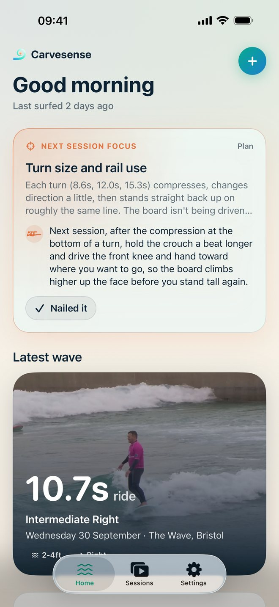
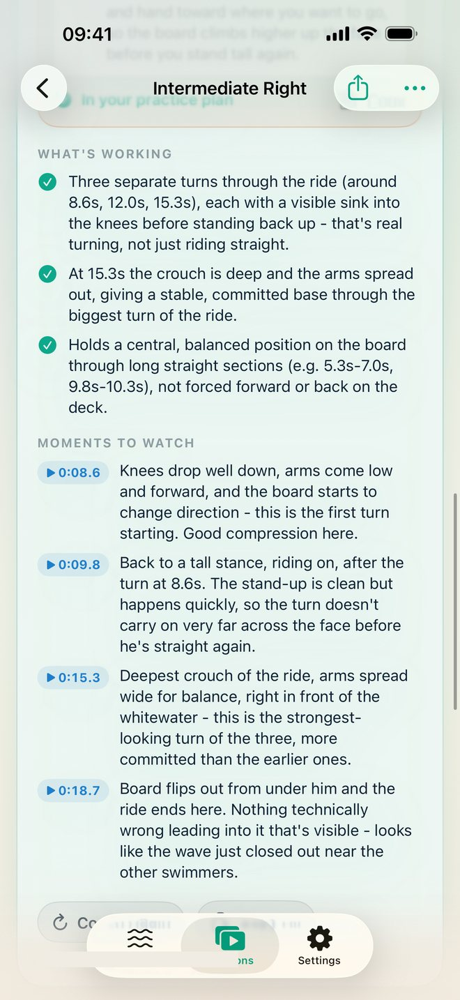
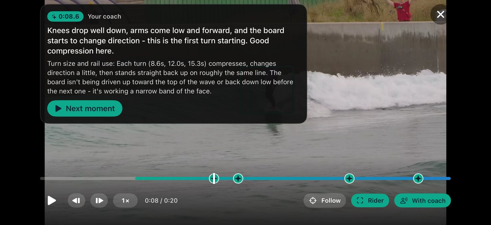
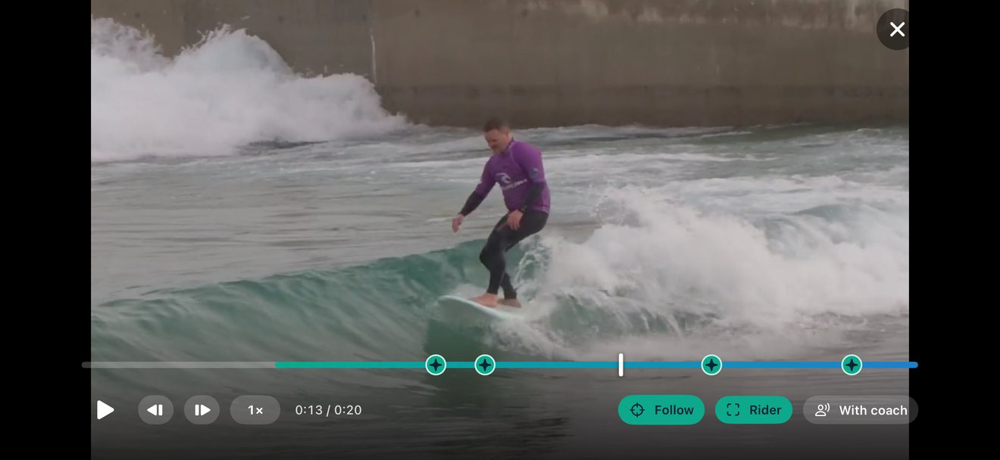
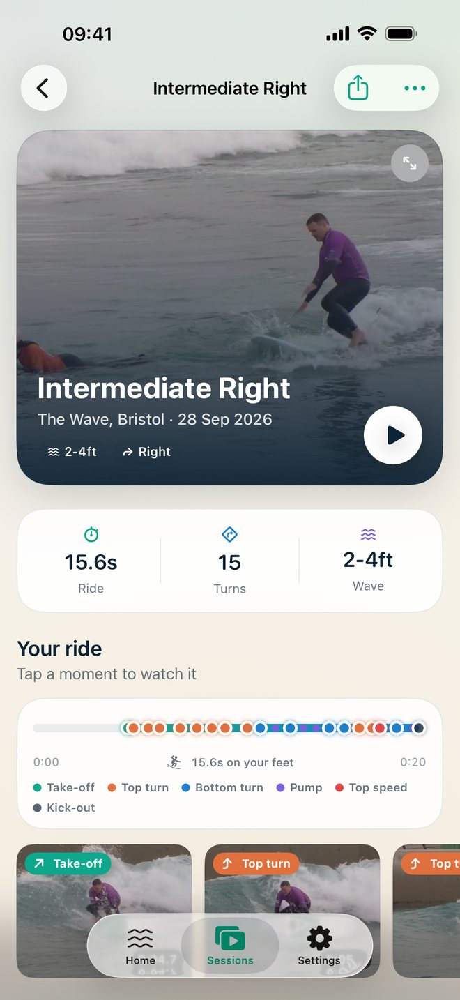
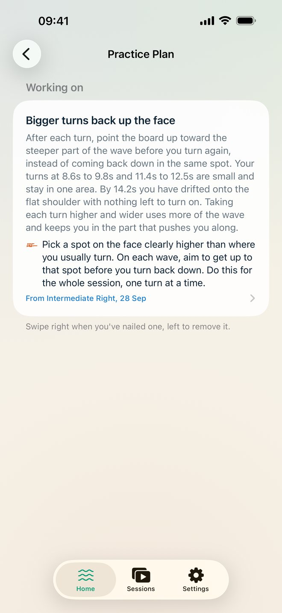
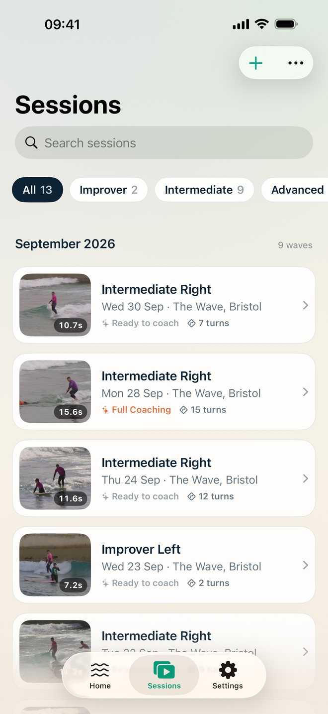

Carvesense finds you in your surf clip, follows you through the ride and measures your technique on your iPhone or iPad. Then a coach that has actually watched the wave tells you what's working, what to fix, and the drill to fix it.
Free to download. Analysis and Quick Take coaching are free, for as many waves as you like.

Not generic tips. Every answer is about one wave: yours.
Full Coaching studies wide shots of the wave and close-ups of you about every third of a second, from take-off to kick-out. It credits the small turns as well as the big ones, and it's honest about the rest.

Press With coach and the player becomes a coaching session: it slows to half speed just before each moment the coach picked out, pauses with the observation on screen, then rolls on.
Step frame by frame, change the speed, or tap any marker on the timeline to jump straight there.

Follow zooms in on you and glides along with the ride, so even a clip filmed from a distance shows your stance and every compression. Switch on the rider box to see exactly who the app is tracking.

Every wave gets its own breakdown: ride length, speed, how much your knees bend in the turns and at their deepest, and your pop-up when it's in shot.
If something couldn't be measured on a clip, Carvesense says why and how to film it next time, instead of guessing.

Add any fix to your practice plan. It's waiting on the Home screen before your next session, and you tick it off when you've nailed it.
Every wave you import stays in Sessions, so you can look back and see how far you've come.


A real ride, played with the coach: half speed into each moment, a pause, the note, and on.
A screen recording of the Carvesense player with a wave pool clip imported from Files. Go full screen to read the coach's notes.
Your footage is yours. Carvesense was built so it never has to leave your device.
Finding you in the clip and measuring the ride all happens on your iPhone or iPad.
Free coaching from Apple Intelligence, right on your device. Works offline.
No account to create, no analytics, nothing sold. Read the privacy policy.
Quick Take costs nothing, ever. Full Coaching is there when you want the coach to see the ride.
Always free: importing, on-device analysis, every measurement and the ride timeline, the slow-motion player with Follow and the rider box, and your practice plan.
* Quick Take needs iOS 26 and an iPhone or iPad that supports Apple Intelligence. Carvesense runs on iOS 17 or later.
Import a clip and see what the coach spots.